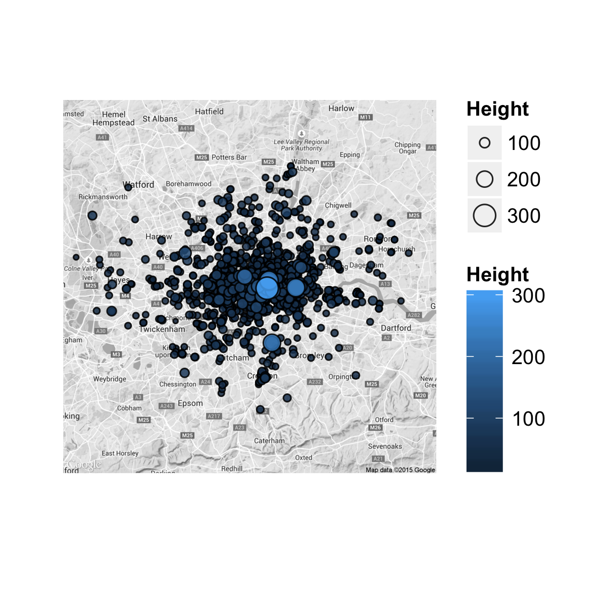
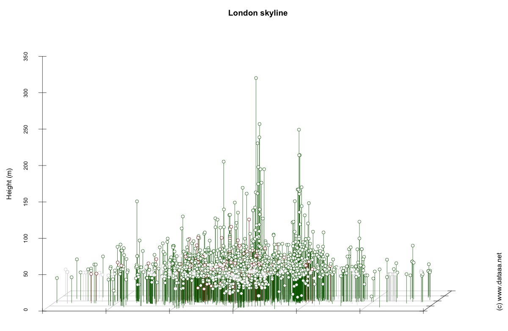

The London skyline
Last weekend I went to London. It used to be my home, and one of the things that I realised I missed about London when I went back there was the London skyline. There's very little like it anywhere in the world (okay, New York perhaps...) and it's very impressive.
On this trip I took the opportunity to go up to level 33 of the Shard. This was not even half the way up the tallest building in London (73 floors, 306m), but it still offered breathtaking views across the capital. This past week I tried to get hold of a dataset offering the heights of buildings in London. It's tricky. There's a very expensive but also very extensive dataset from Ordnance Survey. But then eventually I found a website from Emporis which housed a list of heights for about 2,000 buildings in London:
http://www.emporis.com/city/100637/london-united-kingdom
It was little trouble to scrape these webpages using the excellent readHTMLTable function in the XML package in R. After a touch of data cleaning and wrangling (Google couldn't automatically geocode about 40 of these buildings) I put together a few plots showing the London skyline.

This second plot is from the south of London, looking north. I have colour-coded the points so that the red points are buildings built pre-Second World War, and green points post-Second World War.

A prize for the person who can name the tall building near Chessington...